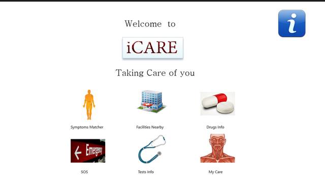

Selected works
Check out my key projects and works


Rover Navigation and Design

I first learned about Google Lunar X Prize while I was trying to experiment with my new arduino in fall'11 semester on LetsMakeRobots. I was amazed to see a competition of this level, a team has to send a rover to the moon to explore and get images. I wanted to participate in the challenge but by that time the registration price was gone to $25000 and as a college student I didn't funds to try it.
Anyhow, I kept working on my rover idea due to my proclivity for the challenge. Later, when I found that an Indian team is participating in the challenge I contacted them. They liked my work and design and gave me a chance to join as a research intern.
I learned a great deal about moon rovers and instruments used in space while working at Team Indus, It was a nice experience. As a research intern I worked mainly on rover development, Navigation and 3D simulation tasks were assigned to me.
I designed the first draft of rover navigation algorithm, which was based on the depth mapping. It used two cameras set up in parallel, the difference in their feeds is utilized in calculating the depth or distance of obstacles from the rover. The algorithm also incorporated the sensor feeds (gyros, accelerometer, infrared) to control the speed and torque of motors. It also used a bit of machine learning to learn about different terrain surfaces.
The 3D designing and mission video was done in Maya and solidworks. It was modelling and animation task, the video required to show entire mission plan via animation. I mainly worked on animation of the video, and also modelling of some secondary items.
- Client/Competition: Team Indus
- Date: May - Aug 2011
- Work: Research Work
Jarvis - 1.0 Using realsense sdk

Smart digital assistants have already created a buzz among smartphone users, after the launch of siri. Google Now and Microsoft's cortana also joined the battle of smart AI based assistants.
I was invited by intel to participate in Ambassador track in their realsense challenge. I took bit of inspiration from the famous movie Iron Man and created the first prototype of my own version of Jarvis program as shown in the movie.
The program key functionalities (version 1.0) were as follows :
Jarvis like personal assistant, very rough prototype a lot of work is to be added to it in subsequent releases. (developed in 8 days of work a lot more to come in the final version) please watch the section after in the video below.
Opening and starting commands
Open/Show any folder (e.g say, open documents, show music etc but dont say open/start music); Open/Start any default/installed desktop or metro application (e.g say, open skype, open photos, start paint etc.) in you have an application installed with a long name like intel realsense sdk 2013 just say intel and it will search the desktop shortcuts and windows search and open it for you. Search/such/Google -- opens google in default web browser with your query e.g search center of earth , or search lion i included such because of accent detection problemSocial Commands
These are the social commands the way jarvis will respond to questions will depend on your gesture mood, but this functionality was causing crashes very often so use it wisely, although i handled the exception with static answers, so if you are getting same replies you can understand that the system has thrown an exception at some stem. How are you doing: How are you: Whats up: will you marry me: Tell me a joke / Joke: *tells you a random joke *Custom commands
Minimize -- minimize all windows mute / /jarvis mute -- windows speaker mute unmute / Jarvis unmute kill power -- shuts down the system lock -- locks the pc time -- tells you current time date -- tells you current datetranslate command
provide the sentense you want to translate in the following format: "Translate hello friends to Spanish" -- and the system will speak up the translated voiceIntelligence response
The system is fully capable of fetching context related data to any query in a very nice format just remember to turn intelligence on, it gets data from different sources and provides you result in a nice ui container. opens browser if unable to find related data. If you use intelligence you have to be a bit patient with the rendering of the results it will take some time, and you cannot crosstalk, you have to click stop listening manually if you dont want your speech to be detected. e.g. : Lion , Love, Lord of rings , population of delhi etc. anything can be passed as a query. but don't bombard queries simultaneously as the app takes some time to render and fetch data and it might hang the system. *If you want to use it without intelligence it can be easily used as a personal assistant, and you can use all of the above commands except queries, in this mode you can crosstalk without manually stopping the listening*- Client/Competition: Realsense challenge
- Date: May - Aug 2011
- Work: Research Work
MOOC Recommender Engine

MOOCs have become an easy and effective method to learn about new topics, Many well known universities (Harvard, MIT, Stanford etc.) as well as individual teachers have joined this online revolution in traditional education to maximize their reach to the masses.
The most prominent problem with this online system of education is drop out rate. Many people (even if the are serious about the course) drop out of MOOCs. I am currently researching on reducing the drop rate by providing a MOOC recommender and management system, with the assistance of my prof. Mr. Rinkaj Goyal
The main focus is to apply machine learning to user preferences and behaviours to know preferred time of studying and interests, then use this knowledge to provide them courses of their interest from different MOOC sites at a single location. The system will also integrate with the user's google calender to provide notifications regarding classes and their pre-planned schedule.
The main agenda of this research experiment is to lower the drop out rate in MOOCs, the system will go live on a pilot test case of students of my university in next spring semester.
- Client: Self Project
- Date: Ongoing Work
- Work: Research Work, Web Development
iCare - Doctor in a box

This is one of my self projects which I started just as a hobby in my junior year. The main idea was to provide medical information and knowledge in hour of need to people living in rural areas or in any situation where immediate medical attention is required but not available. I built the first version in my fall'11 semester, later I decided to take it to the next level by integrating voice based search, hardware testing and diagnostic equipment thereby making it a complete doctor in a box solution.
I submitted this project in Microsoft Imagine Cup 2011 in Software Category. The project was highly appreciated by the judges and our team was national pre finalst for that year, but the organizers thought that putting up a system like we were proposing is a mammoth task and can't be completed in short competition deadline. Thus our team was rejected from the competition
It was one of my genuine ideas so I kept researching on it as a side project, I even learned haematology and other diagnostic testing procedures to think out of new ways to integrate with my system .
Later when I read about Qualcomm tricorder X prize, I was astonsihed to see the same challenge definition as what I was trying to achieve with iCare, I talked to some of the teams that were participating and teamed up with Jack Andraka's team GenZ to win this competition. Unfortunately, the team decided not to continue with the challenge due to team fragmentation, short deadline and other untold issues.
I was a bit disappointed because I was very excited about the competition. I kept on tinkering with the design and implementation on my own. Recently, I was trying to implement the IBM Watson API in the application as they made it open for third party applications. I think that watson api will be a good add on for this project. I am also researching on sensors and different diagnostic test mechanisms to make the iCare capable of testing and diagnosing a wide variety of ailments and diseases.
Here is some information and a few screenshots of first version of the application that I developed in my junior year. The application included symptom matcher, nearest hospital finder, medical history profile and drug information as the main features
Introduction
Every year millions of people die each year due to the lack of improper medical attention or due to late detection of diseases and also stats shows that more than 225,000 people die each year due to improper medical treatment or advice. And nearlymany hundred thousand others due to lack of proper SOS help. My solution aims at lowering these numbers and providing better healthcare for people around the world .
This is a desktop app (iCare) which which essentially provides you the functionality of doctor in a box. It provides you valueable healthcare information when needed. Just Imagine its 2 AM in the morning and you got a sudden headache or you are some place remote and you are on your own or there is something wrong with your body but you don't know whether it is serious enough to see a doctor or not , ICare helps you answer these questions and get useful information in the hour of need .
Key Features
Symptom Matcher : This utility helps you identify various symptoms associated with a body part along with causes associated with each symptom and further you can lookup each cause description alongwith natural remedies ,tests and drugs used in curing that cause. It also tells you the threat of a particular cause so you can know whether its essential to get a health check up or not .
SOS : This utility of the application helps you get immediate reliable medical information , procedures and how to guides in SOS conditions like heart attack , burns , shocks , stroke etc .
Facilities : This utility lets you lookup any Medical facilities , hospitals and clinics near your Geo-location along with the address , map guide and number of each facility .
Drug Info : This utility helps you lookup detailed information about any drug , Its common usage , side effects, composition even alternate drugs or salts which can be used as viable replacements.
My Care : This utility helps you keep track of your personal health record including durgs you are using , BMI info and other body stats it then gives the diet plan which is best suited for your health (keeping in track of your geolocation e.g. if you are in dubai you need to drink more water etc) . It also keep track of your medical history about drugs so that it wont tell you to eat something which might be harmful according to your present medical condition (e.g. banana in case of kidney stone)
Test and procedures : This utility helps you lookup various tests and procedures that a doctor might prescribed for you . for example doc might have told you to go for CBC you can lookup complete info about that test in which conditions it is used what is the procedure of test and normal ranges etc.
P.S. : All the data that application fetches comes from a custom built web service which collects this data from cutom populated database along with harvard med school database , Good Rx api , Google Places api , HHS api and antena Carepass api so it is reliable and effective.
Here are some screenshots of the first version of the application.
- Client/ Competition: Self Project / Imagine Cup
- Date: Feb 12 - Present
- Work : IoT Research / Professional Project
Zarvis - Intelligent home assistant
This project was made initially as a competition entry for Appcelerator Devchallenge named as Electroapp. The first version had very basic functionality as it was hacked together in a week from idea to prototype in a dorm room. It enables users to control home appliances and devices using their smartphones.
When I researched the market I found out that there were no similar products in the market except Nest thermostat controller. I decided to research on it, improve it and finally launch it as a polished product. I started working on it, I integrated cctv feeds, lock controls and machine learning in the initial version.
I also implemented XBee wireless communication within the buttons/sockets and local control unit (a tablet), which in turn connected to the remote server via wifi. I also applied a bit of machine learning in the system to learn user behaviour, preferences and act accordingly.
By the time the project was almost complete and just final touches were remaning, a new similar product launched in the market by Belkin company named "Wemo". So, we decided not to launch it as a professional project.
Here is a video of the first barebones version hacked together in 4 days.
This is the revamped version: Demo
- Client/Competition: Self / Appcelerator Devchallenge
- Date: Feb'12
- Work: NLP,BaaS, Android, ML
Nostalgia - Relive your memories
I was invited to participate in MIT Global Startup labs, a summer program to build and launch a startup project. 9 Teams are formed out of selected participants to work on different potential startup ideas.
We brainstormed various ideas and decided to work on my suggested concept of a travel diary generator, Nostalgia. The main idea behind the app is to allow users a better avenue to revisit their memories. Application requires negligible user input to produce a journal based out of journey.
At the start of a trip user press record and at the end of the trip stop recording. It fetches local and remote user content (photos, videos, social feeds/comments) analyze this data to generate a travel journal. The images are analysed for emotions and moods using image processing, Social feeds from networks like facebook, twitter , g+ are analysed using NLP and then all this information is used to generate the travel journal in a very nice UI also end video.
The present project uses a couple of pre-set templates do changes in them depending on the analysis of user content. I am trying to achieve more dynamic and detailed content generation in future versions of the app.
- Client/Competition: MIT Global Startup Labs
- Date: Jun- Aug '13
- Service: NLP, Image Processing, Android
AirRacing - gesture controlled game

This project was built as my Intel perceptual challenge entry, the main idea of the challenge was to make something creative and unique using intel perceptual camera. I utilized the gesture movement as a medium to control the game.
The game was built in unity, It was a decent 3D car racing game. I even made some of the graphics myself in maya. To make it work, I wrote a script to capture the user gestures and translate them into car motion.
The user has to keep his both hands in front clenched like he/she is holding a steering and the car will start accelerating. The user turns his hands to steer the car as if he is holding an imaginary steering and open hands to apply brakes.
The game was very fun to play due to its unique user experience. It won in perceptual challenge and I also got invited to participate as an ambassador in Intel perceptual challenge next year. Here is the script that I wrote for the gesture control.
- Client/Competition: Intel Perceptual Challenge
- Date: Sept '12
- Service: Image Processing, Gesture tracking
Crazyfingers - an addictive game

This game was developed for Microsoft DreamBuildPlay competition. It was built by me and my friend in college dorm room only in 4 days from scratch. The first version was built on windows phone 7 as the challenge required.
The gameplay was very simple but addictive, you have to swipe your finger through a maze in minimum possible time avoiding obstacles. It might sound very simple task but the timing was very low and you have to go through a complete path, which made it challenging.
Unfortunately, we were unable to participate in the competition because our modem got jammed in last hours while submitting it. Later, We even developed a desktop version and submitted for Intel Appinnovation challenge and won Lenovo AIO 27" to test and build our app
Here is a demo link of the first version that was result of 2 all nighters.
And this is the screenshot of desktop version of the app that I developed for Lenovo AIO with my teammate (Gurupreet Singh).

- Client/Competition: DreamBuildPlay, Intel AppInnovation
- Date: Sep'12
- Work: Windows Phone, Unity
Vision Browser

What is Augmented Reality ?
Augmented reality is a technology that wipes out the difference between the real and the digital. This technology resonates with the customers in such a way that lets brands actually interact with them. Be it, taking a test drive of latest car model, playing a game or learning new recipe. It is now the big thing in the mobile world and has the capacity to amaze people with its possibilities.
Vision browser is a revolutionary app idea that’s going to make your life much more easier. I have been playing around with Augmented Reality applications in various fields including advertising, marketing, utility, education, entertainment and others.
Just imagine you can just pan out your camera to gather all the information you need about your surroundings ranging from embedded newspaper and magazine feeds and videos to nearby places to visit, nearby Points Of Interest like atm, hotels, hospitals etc, nearby friends in your surroundings, information from posters and hoardings, nfc based object tracking and much more. we have surveyed 500 people and they all want to use our product in their smartphone
The app is not yet available in the market but here is a link to the first basic version which I built during my first experiment
- Client/Competition: Self Project
- Date: Dec '12
- Work: AG Reality, Android
Bluegape - eCommerce Portal
From 2nd year of my college I started working on freelance projects and startup tech support/consultation to hone my skills with practical implementations. I developed more than 50 projects for different individuals and clients.
Bluegape - an online merchandising store, was a startup back then. I got a call from the founder to help with the setting up of an ecommerce website and payment integration. They were under a tight schedule as they just got an order form a big local brand.
I setup their first online merchandise store for Garbage bin's first comics, with payment integration. One of their team member was working on the implementation with me.
The first auction was a success they got 100,000+ orders, we managed to keep the system online as long as we could but finally the server crashed due to bandwidth limitations and excess hits.
It was a very good experience and I got good learning on how to build and manage an online ecommerce store. Later on, they expanded and became a 40 member team, raised funding and added different merchandise to their store. Until recently, they ran into copyright issues and have to shut down their online fan art store.
- Client/Competition: Bluegape
- Date: Dec-Jan '12
- Work: PHP/mysql, server management, payment integration
Quizworks- quiz plugin

This was another one of my freelance projects for Quizworks Pvt ltd., They launched a new online magazine Quiztalk and the task was to provide a quiz plugin for a it (wordpress based website). The main requirements were to handle different type of quiz questions (text, image, video), timer and easy integration using shortcodes.
I built this plugin using php, it used hooks in wordpress to trigger actions. It was a long task as I was a newbie to plugin development at that time, it took me almost one and a half month to complete this project. I even used some open source plugin scripts (from 3 different plugins) for backend gui implementation to fasten up the dev time and use some of the features they have already implemented (without violating any licenses). The main features of the built plugin were as follows:
*Add images, audio and video to quiz questions. *Tests questions organized by categories. *Timer for overall quiz as well as record of time spent on each question. *Question Pool allows organizing test questions by categories and reusing them for different quizzes. *Extensive feedback options (quiz feedback; feedback for correct/incorrect answers (during the quiz or at the end); feedback for each answer option) *Track tests statistics from the admin section as well as show quiz statistics to users on your site.(logs ip, email, time and browser info to stop fake attempts) *Dynamically generated custom reports for an administrator and for the users. *Show different information to the users upon the quiz completion (completely hide the results, show the details on every question or only short result summary) *Redirection after quiz to another page or to the different pages depending on user score. *Multiple Choice and Multiple Response quiz questions import from .CSV files. *Move/copy questions to other quizzes/question pool. *Move/copy quizzes to another category
Here is a video of the plugin.
- Client: Quizworks
- Date: Aug - Sept '12
- Work: PHP, Plugin Development
Online App generator

This project was started by my friend (Nemory Oliver), I joined in later because I liked the idea. Actually, there was this blackberry port-a-thon event going on, a promotional gig by Blackberry for increasing apps in their marketplace for upcoming launch of their new bb10 platform.
Developer's were offered cash incentives for the certified apps submitted within a pre defined 24 hour time limit. At that time blackberry 10 launch was on full swing and there aren't much good tech resources or tutorials to help developers as the technology is new and completely different from Blackberry legacy devices development.
As, I was invited in the BBJam event in Delhi for pitching my idea, I had some good exposure about Blackberry 10 development using native and html5 sdk. My partner had also a good grasp on the bb10 dev too, so we decided to make an app generator engine for Blackberry like the ones available for android and iOS.
The first version that we launched had only one sample template of a quiz app, the users can provide questions with answers and our site generated a complete app code for them using the data they provide (icon, name etc). The developer then can download the application and sign it with their keys to submit it in the appworld.
It was a huge success during port-a-thon events, 1500+ apps were made using our app generator tool. It was just made to help the developer community we were a part of and was provided completely free. After the port-a-thons the app generation decreased as the developers get more and more familiar with the platfrom, So we decided upgrade and revamp it fully to create different kind of polished apps and launch it as a professional product in the market. We haven't worked much on this project lately, it is just placed off the shelf as we both are busy currently. Although we plan to make the polished version in the upcoming year.
The initial version can be accessed here
- Client/Competition: Team Project
- Date: Mar '12
- Work: PHP/mysql, JSON, code generation
Miscellaneous Projects

These are some of miscellaneous projects which I have developed over time while experimenting with different technologies, concept ideas and freelancing. Notepad: A simple note taking and sharing application for windows phone. NinjAcadmy: A cool aiming/shooter game built with XNA studio for wp7. CapThatSnap: A prank meme generator app which applies fun quotes to your pics for windows phone GunShots: A prank app built for windows phone that produce gun sounds on shaking. TouchDraw : A simple paint based app for windows phone, express and share your creative thoughts. BeACook: A utility app that lets you find different recipies based one the ingredients at your disposal for BB10 Juno2D: A simple 2D shooter game made for BB10 GRE Flashcards: An app that helps you learn GRE vocab by using flashcards. Biodiesel & non conservational sources of energy : I made this project in my school for science fair, It included use of transesterification process to produce high quality bio-diesel and some of new ideas for production of energy like tidal dams, solar power plants and a concept for harnessing power of lightning. The project was highly appreciated by the judges and I won at state level and got selected for national level science fair. YoPharma : It was an app developed for a startup (YoPharma - Online pharmacy), the idea was to provide the doctor's with a prescription writing app which will then integrate directly with their backend and patient will get the medicines at their doorstep. But, a problem arose when doctors refused to use an app for writing prescription. Then I have to completely re-write a new app from scratch, this version allowed users to send the prescription to YoPharma instead of doctor's directly sending it. After that, chemists will read the prescription and medicines will be delivered to the patient. Moreover, the user will also get notifications of when to take a pill.
- Client/Competition: Misc Projects
- Date: 2008-2012
- Work: App dev, concept ideas implementation
About me
I am Sahil Sachdeva,a young enthusiastic budding tech entrepreneur and freelancer.Currently working in Research and Development department at Tejas Networks.I have worked with many startups like BlueGape,TechKarma at their initial stages.I worked at Indian Space Research Organization as a research assistant.Apart from this I have succesfully delivered corporate projects with great appreciation. An active participant in hackathons and online competitions.Working with my team for my dream healthcare project.

My other intersets include psychology, ecomomics, politics of world.I am always curious to learn about human brain and and wish to make computers simulate it.I find the human body and computers as ultimate creation-one by God & another by Human.Currently working on Machine learning and Artificial Inteligence.A cricket aficionado,I love to follow as well as play the game whennever I get time.
My Experience


Contact
I am always looking for opportunities which can provide me some real learning experience and put me in a challenging situation.I find interacting with like minds very enjoyable and love to socialize.Would like to collaborate for some fresh entrepreneurial ideas which can bring some social change in the world.Please free to connect.